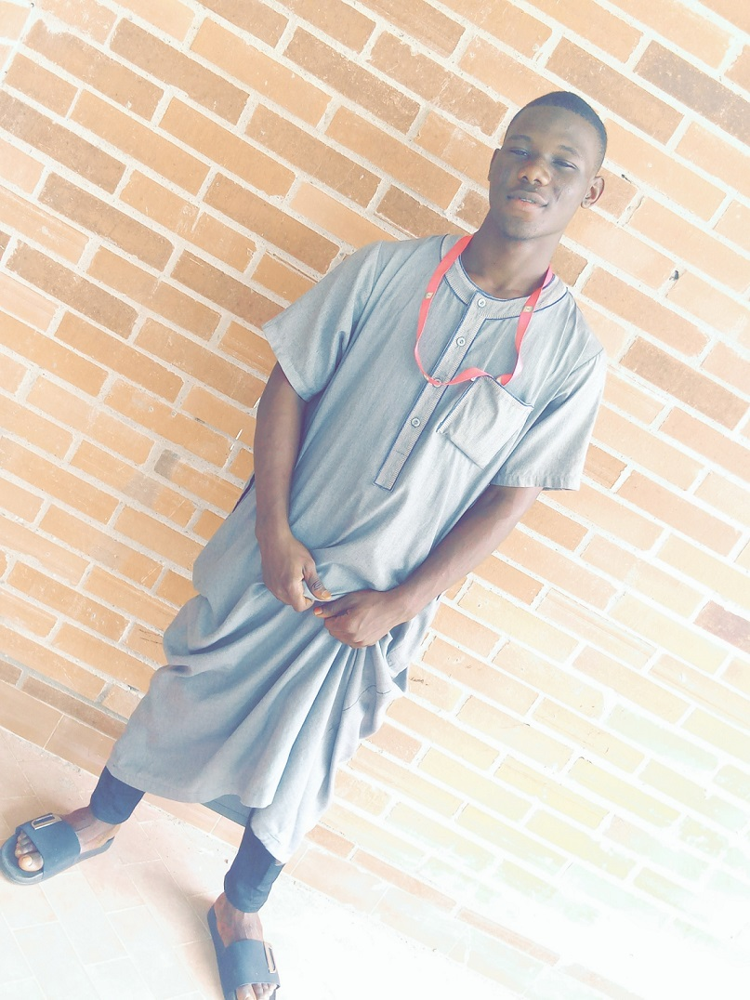

my name is Olola Hamad Ayinla a student of kwara state university 200l library and information science,i started schoolat the age of 3 at St. gegory nur/pry. in kwara State.I finished primary school at the age of 10years during my primary school i was given a game prefect post which is my first achievement, i was so happy to make it among my mate,so after my primary school i further to a secondary school in ilorin which is known as fiveways int'l college,i was among the youngest student offered admission into the school last year and i was happy to make it to the school that year.
after gainig admission i prepared hard for the future for my dream to be achieved,i was the best football student of my class from the beginning of jss1-jss3,so that's why i was given the game prefect for the remaining of my the secondary school days.